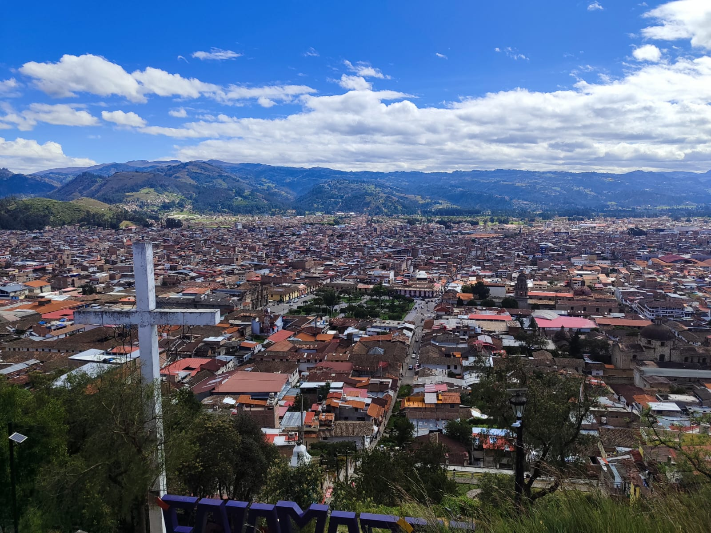

Aventura y Cultura: Viaje a Cajamarca
Recorriendo los hermosos paisajes de Cajamarca, disfrutando de su historia, gastronomía tradicional, los Baños del Inca y momentos inolvidables.

Recorriendo los hermosos paisajes de Cajamarca, disfrutando de su historia, gastronomía tradicional, los Baños del Inca y momentos inolvidables.
Viaje a la Ciudad Blanca de Arequipa para realizar mi pasantía. Una experiencia enriquecedora combinando aprendizaje práctico, nuevos contactos y vistas del Misti.